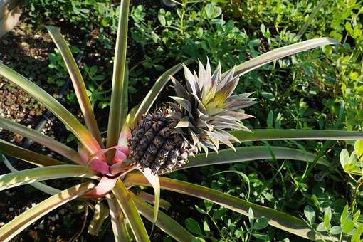
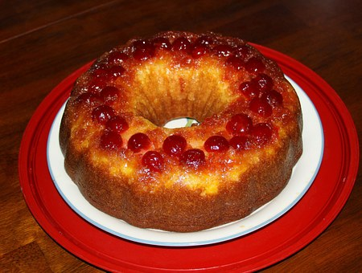
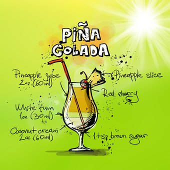

WHERE DO THEY COME FROM?
The pineapple is a herbaceous perennial, which grows to 1.0 to 1.5 m (3.3 to 4.9 ft) tall. The plant has a stocky stem with tough and waxy leaves. The plant usually produces up to 200 flowers and once it flowers, the individual fruits of the flowers join together to create what is commonly referred to as a pineapple. After the first fruit is produced, side shoots (aka 'suckers') are produced in the leaf axils of the main stem.
WHAT'S THE BEST WAY TO EAT IT?
The first recorded recipe for Pineapple Upside Down Cake:
According to John Mariani's ( The Dictionary of American Food and Drink , Revised Edition, 1994), "The first mention in print of such a cake was in 1930, and was so listed in the 1936 Sears Roebuck catalog, but the cake is somewhat older." In Fashionable Food: Seven Decades of Food Fads (1995), Sylvia Lovegren traces pineapple upside-down cake to a 1924 Seattle fund-raising cookbook...While rooting around in old women's magazines I found a Gold Medal Flour ad with a full-page, four-color picture of Pineapple Upside-Down Cake--a round cake with six slices of pineapple, candied red cherries, and a brown sugar glaze. The date: November 1925."
--- American Century Cookbook: The Most Popular Recipes of the 20th Century , Jean Anderson (p. 432)
HAPPY HOUR, ANYONE?
4 Tips for Making a Great Pina Colada:
Choose a good rum
Use fresh pineapple juice
Cream of coconut is the best
And give it a good shake!
Choose a good rum
Use fresh pineapple juice
Cream of coconut is the best
And give it a good shake!